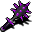

輝きのイブニングスター Brilliance (artefact)
英語版 CrawlWiki の記事「Brilliance (artefact)」(0.34 向け、2026-02-05 版)の翻訳です。原文の著者は編集履歴をご覧ください。
この記事はアーティファクトについて説明している。薬の効果については知性の薬を、モンスター専用の呪文については輝きのオーラを参照。
| 堕ちて間もなく、イレデレンヌルは聖なるエネルギーを捻じ曲げてその暗い紛い物を作り、それを生みの親たちに向けるとともに、アンデッドと悪魔に対しては弱めようと試みた。だが、これほど完全な倒錯は制御できないと気付いたときには遅すぎた。穢れた炎は、吹き込まれたあらゆるものを不安定にするか破壊してしまい、残ったのはいくつかの悪魔の実験体と、盗み出された聖なる武器ひとつだけだった。より弱く安定したこの暗いエネルギーは扱いやすいとわかり、イレデレンヌルの影の領域となった。
これがその武器である。その名にもかかわらず光はとうに失われ、かつてその光が慰めた者たちを退ける影をまとったイブニングスターだ…… |


+1 イブニングスター
穢れた炎のブランド(AC で軽減したあとのダメージに、神聖な相手には 75%、邪悪な相手には 25%、それ以外には 50% を上乗せする)
半径 3 マスの暗影
邪悪
評価
強化値が低く、ほかの性質もほとんどついていないが、輝きのイブニングスター[1]は片手持ちの鈍器のなかでも指折りの選択肢だ。
ほとんどの生き物は生物、植物、非生物のどれかで、これらには穢れた炎が +50% のダメージを与える。これはブランドのなかで最高で、早業と並ぶ。アンデッドや悪魔が相手でも、上乗せ分は火炎や冷気と同じくらいある。いちばんよく効くのは神聖な相手だが、こちらはめったに出てこない。
ブランドが一級品なうえに、暗影で敵の命中率が下がり、イブニングスター自体も強い武器種なので、3ルーンのゲームなら最後まで十分に戦える。エクステンデッドでは邪悪な敵が多いので、ふだん使いには +9 の火炎/冷気/神罰の武器のほうがよいが、神聖な敵が相手のときの持ち替え用としてはまだまだ使える。
変更履歴
- 0.32 で、新しいブランドと設定をともなって復活した。
- 0.19 より前は、神罰の +1 イブニングスターで、AC+5、知力+5、rN+、隠密－と、半径 3 マスの光輪がついていた。光輪の効果はエオスに移された。
- 0.15 より前はメイスで、輝きのメイスと呼ばれていた。霊視がつき、隠密へのペナルティは -20 だけだった(光輪がつく前の話)。
出典
- ↑ art-data.txt:409 (0.32.0)